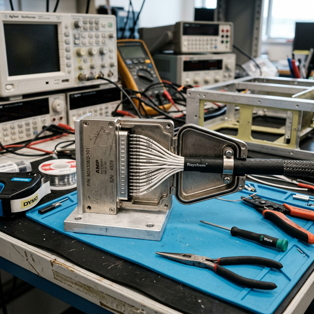

Connectors & backshells
Module Objectives
- Define the primary purpose of multi-pin circular and D-sub connectors in avionics architectures.
- List the three protective functions provided by a connector backshell.
- Explain the purpose and methodology of the dynamic "wiggle test."
Why Does This Matter?

A VHF comm radio works flawlessly on the quiet test bench but repeatedly drops offline when the aircraft hits light turbulence. The technician pulls the radio tray out to inspect the large D-subminiature connector at the rear. They find the metal backshell is missing its clamping screws, leaving the massive bundle of fifty wires dangling freely. Without the backshell's strain relief, every vibration bump pulls directly on the tiny crimped pins inside the housing, causing them to lose contact micro-seconds at a time. A $5 backshell clamp would have prevented a massive diagnostic headache.
What You Need To Know
The Function of Connectors
Aircraft connectors (like D-Subs or Circular Mil-Specs) provide a reliable, modular, removable electrical junction between the massive aircraft wire harnesses and the delicate avionics equipment. Their primary engineering purpose is modularity: LRUs (Line Replaceable Units) can be swiftly removed and replaced for repair without having to cut wires or destructively disturb the airframe harness.
The Criticality of Backshells
A backshell is the metallic or composite rear housing of a connector that firmly clamps the exiting wire bundle. A connector without a properly installed backshell is unairworthy. It provides three mandatory functions:
- 1. Strain Relief: It securely anchors the heavy wire bundle to the connector shell, absorbing massive mechanical tension so pulling forces do not transfer to the fragile, millimeter-thin connector pins.
- 2. Vibration Protection: It acts as a rigid splint, shielding the delicate pin terminations from dynamic flight loads and engine harmonics.
- 3. Environmental Sealing & Shielding: In advanced connectors, it excludes moisture and provides absolute 360-degree continuity for the cable's EMI shielding braid to ground out against the chassis.
Environmentally Sealed Splices
When making permanent connections in moisture-prone areas (wheel wells, engine bays, unpressurized tail cones, bilge areas), standard butt splices are inadequate. Connections must be environmentally sealed using:
- Solder-Sleeves: A precise, heat-shrinkable sleeve containing a pre-tinned solder ring that flows when heated with a heat gun, simultaneously fusing the conductors and sealing the joint from moisture.
- Adhesive-Lined Heat-Shrink: Placed over a standard crimp splice, the inner polymer melts during shrinking, oozing out the ends to form a permanent waterproof barrier.
Open nylon crimp splices or wrapping joints in electrical tape are strictly prohibited in aviation.
The Wiggle Test (Dynamic Diagnostics)
A single static continuity check with a multimeter on the ground is useless against vibration-induced faults. You must perform a wiggle test:
- With the system powered and operating, gently but firmly flex, push, and bend the wire harness immediately behind the connector backshell.
- Monitor the avionics display or audio output for any dropouts, static, or resets.
- This dynamic test exclusively detects marginal crimps that maintain delicate touching contact at rest but structurally break apart under flex.
System Visualization
graph LR
A[Vibration from Engine] --> B[Transfers along heavy wire bundle]
B --> C{Is Backshell properly clamped?}
C -->|YES - Strain Relieved| D[Backshell absorbs force into housing]
D --> E[Delicate pins remain perfectly seated]
E --> F[Radio operates flawlessly]
C -->|NO - Wires loose| G[Force pulls directly on crimped pins]
G --> H[Pins flex within housing]
H --> I[Pins physically back out or break]
I --> J[Intermittent Radio Failure]
style E fill:#166534,stroke:#14532d,stroke-width:2px,color:#fff
style J fill:#991b1b,stroke:#7f1d1d,stroke-width:2px,color:#fff
On The Job
After meticulously pinning out a 37-pin connector, never rush the final step. Verify the backshell saddle clamp is tightened evenly—snug enough to grip the bundle tightly so it cannot be pushed or pulled, but not so tight that it crushes the Teflon wire insulation. Before signing off any new digital installation, perform a vigorous wiggle test at every single connector interface to guarantee you haven't left a ticking time-bomb in the harness.
Reference Terms
Aircraft Connector Function
Aircraft connectors provide a reliable, removable electrical junction between wire harnesses and avionics equipment — allowing LRUs to be disconnected and replaced without disturbing the aircraft wiring harness.
Connector Backshell
A backshell is the rear shell of an aircraft connector that clamps the wire bundle, providing mechanical strain relief, protecting the terminations from vibration damage, and (in environmentally sealed types) excluding moisture and contaminants.
Environmentally Sealed Splice
In areas exposed to moisture, fuel, fluids, or temperature extremes (wheel wells, engine bays, bilge areas), wire splices must be environmentally sealed — using a solder-sleeve (pre-tinned solder ring that flows when heated, sealing the conductor) or adhesive-lined heat-shrink over a crimp splice to exclude contaminants.
Wiggle Test
A wiggle test involves gently flexing wiring near connectors and terminal points while monitoring for circuit continuity changes; it detects intermittent connections from marginal crimps, loose pins, or strained solder joints that static testing would miss.
Backshell
The structural rear housing geometry of a connector that clamps the wire bundle to provide strain relief, vibration damping, and shielding continuity.
Strain Relief
A mechanical anchoring method that isolates delicate electrical terminations from physical tension and bundle weight.
Solder-Sleeve
A specialized pre-tinned, heat-activated splice tube that provides simultaneous electrical connection and absolute environmental sealing.
Assessment Check
Backshells are structurally mandatory to prevent vibration damage, wet-area splices must be environmentally sealed, and rigorous wiggle tests catch the intermittent faults that simple static testing completely misses. --- ---